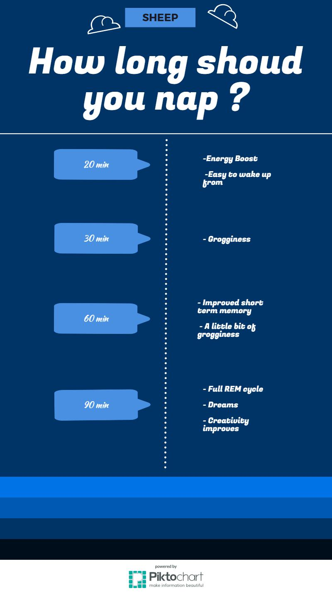

Depending on how long you sleep, you'll experience various positive and negative effects. Here's a helpful infographic to help you determine how long your next nap should be?

Sleep Cycles?
A sleep cycle is when we move through the 5 stages of sleep and usually lasts about 90 min. Waking up in the middle of a sleep cycle can leave you feeling groggy but waking up in between cycles leaves you feeling refreshed and full of energy. Use the website Sleepyti.me to figure out what time you should fall asleep. Don't believe it works? Here's a New York Times article of someone who tried it